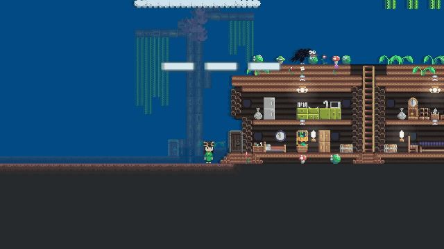
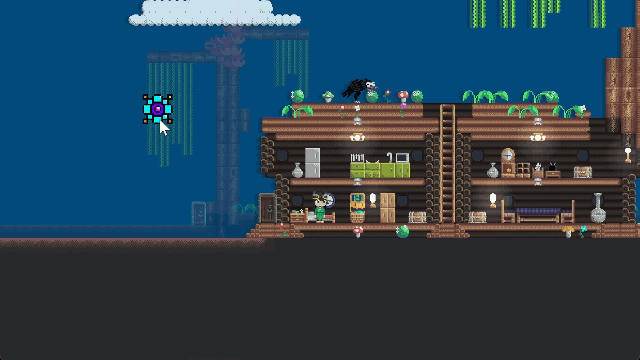

Input
AngeliA provides a built-in frame-based input system. You can detect whether a specific key on the keyboard, mouse, or gamepad is pressed during the current frame, and also retrieve the global coordinates of the mouse pointer.
Keyboard Input
The following code displays the pressed state of specific keys at the top of the screen:
using AngeliA;
namespace Test;
public static class InputTest {
[OnGameUpdateLater(4096)]
internal static void OnGameUpdateLater () {
bool holdingQ = Input.KeyboardHolding(KeyboardKey.Q);
bool holdingW = Input.KeyboardHolding(KeyboardKey.W);
bool holdingE = Input.KeyboardHolding(KeyboardKey.E);
GUI.Label(
Renderer.CameraRect.TopHalf(),
$"{(holdingQ ? "Q" : "-")}{(holdingW ? "W" : "-")}{(holdingE ? "E" : "-")}",
GUI.Skin.AutoCenterLabel
);
}
}
Output:
Game Keys
The engine provides 8 predefined game keys, corresponding to common controls on an NES-style controller: Left, Right, Down, Up, Action, Jump, Select, and Start.
Players can assign both keyboard and gamepad buttons to these game keys.
Use Input.GameKeyHolding(GameKey.XXX); to check if a specific game key is pressed in the current frame.
Mouse Position
The following code draws an entity icon at the current mouse pointer position:
using AngeliA;
namespace Test;
public static class InputTest {
[OnGameUpdateLater(4096)]
internal static void OnGameUpdateLater () {
var pos = Input.MouseGlobalPosition;
Renderer.Draw(BuiltInSprite.ICON_ENTITY, new IRect(pos.x, pos.y, 512, 512));
}
}
Output:
